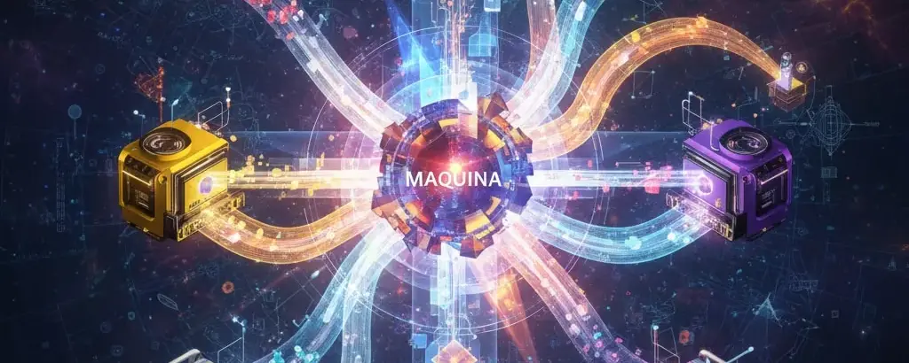

Maquina: A Theory of Everything for Digital Twins
· Simulated Worlds series
Digital twins are evolving into rich, interactive environments where humans, AI, and robots collaborate to understand and shape complex realities.
As these environments grow more sophisticated, they increasingly require the computational depth and real-time responsiveness of simulations rather than traditional applications. This isn't coincidental; simulations have become the fundamental paradigm for understanding complex systems, from climate models to economic forecasts to molecular dynamics. Spatial computing devices are accelerating this convergence, allowing us to interact with these simulated environments as naturally as we move through physical space, making complex data landscapes tangible and actionable.
The true challenge, however, lies not in simulation design but in embracing the fundamental complexity of the systems we're trying to model. A theory of everything for digital twins must acknowledge that the phenomena we care most about (the dynamics of our communities, the evolution of our careers, the interdependencies within our organizations) exhibit computational irreducibility, a concept central to Stephen Wolfram's work. There is no shortcut, no simplified equation that can capture their full behavior; only simulation can provide the holistic experience necessary for genuine understanding and prediction. Yet we cannot simulate everything; we need to rapidly model what matters most from our unique perspectives, capturing the specific contexts and relationships that define our individual and collective experiences.
Digital twins are essentially simulations tailored to unique experiences, but creating these personalized simulations quickly and accurately remains a fundamental challenge. Drawing inspiration from David Deutsch's Constructor Theory and Wolfram's computational universe, I propose "Maquina," an approach that bridges the gap between universal physical principles and the particular realities we need to navigate within digital twins. In Constructor Theory terms, we're defining which transformations are possible or impossible within our digital environments, with Operations representing permitted transformations and Machines acting as the constructors that reliably perform these tasks.
The primitives for this theory of everything are elegantly simple: Objects, Operations, and Machines. Machines are generic computational devices that use operations to transform groups of objects into other groups of objects. Consider a supply chain: Objects represent inventory, vehicles, and orders; Operations define transformations like manufacturing, shipping, and payment processing; Machines are the agents (warehouses, factories, distribution centers) that execute these operations. These three primitives are sufficient to model everything from market dynamics to social networks to industrial processes. From these basic building blocks, we can construct digital twins that capture the full complexity of our interconnected systems while remaining computationally tractable and personally relevant.
This approach ties directly into the emerging landscape of world models and physical AI. As large language models evolve to incorporate richer representations of reality, they need structured frameworks for reasoning about complex systems. A pragmatic first use case for Maquina is to serve as the world model backbone for LLMs, enabling users to quickly build digital twins through natural language interaction. By providing LLMs with a consistent computational substrate based on Objects, Operations, and Machines, we can help them reason about and simulate real-world scenarios with greater accuracy and relevance to individual contexts.
Of course, modeling computationally irreducible systems presents inherent challenges: simulation demands grow with complexity, and ensuring interoperability across diverse digital twin implementations requires careful standardization. Yet by establishing clear primitives and leveraging LLMs for natural language interaction, we can make these powerful models accessible without sacrificing rigor.
In a future piece, I will showcase Maquina in action, demonstrating how these concepts inspired by Constructor Theory and computational irreducibility can be practically applied to rapidly model complex experiences within digital twins. This will illustrate how we can move from theoretical frameworks to working systems that enable humans, AI, and robots to collaborate effectively in understanding and shaping complex, emergent realities using just Objects, Operations, and Machines as our foundational building blocks.
First published on X on October 29, 2025. Read the original.